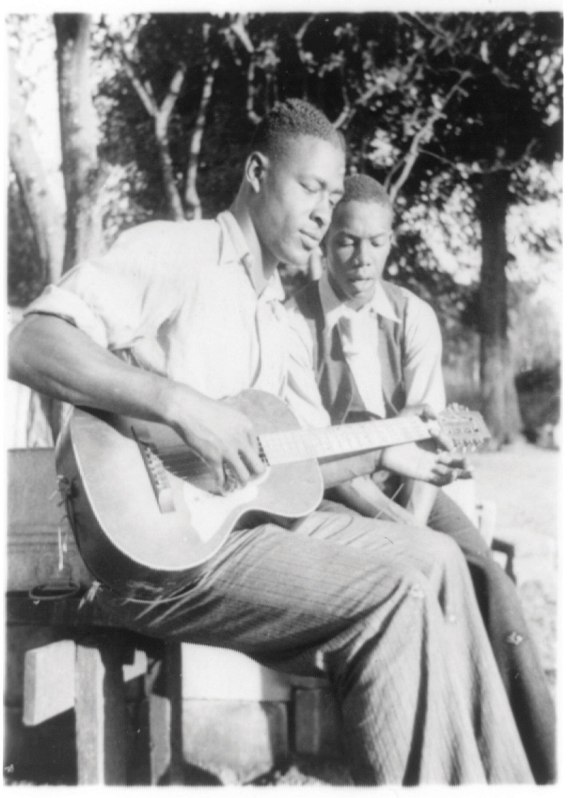
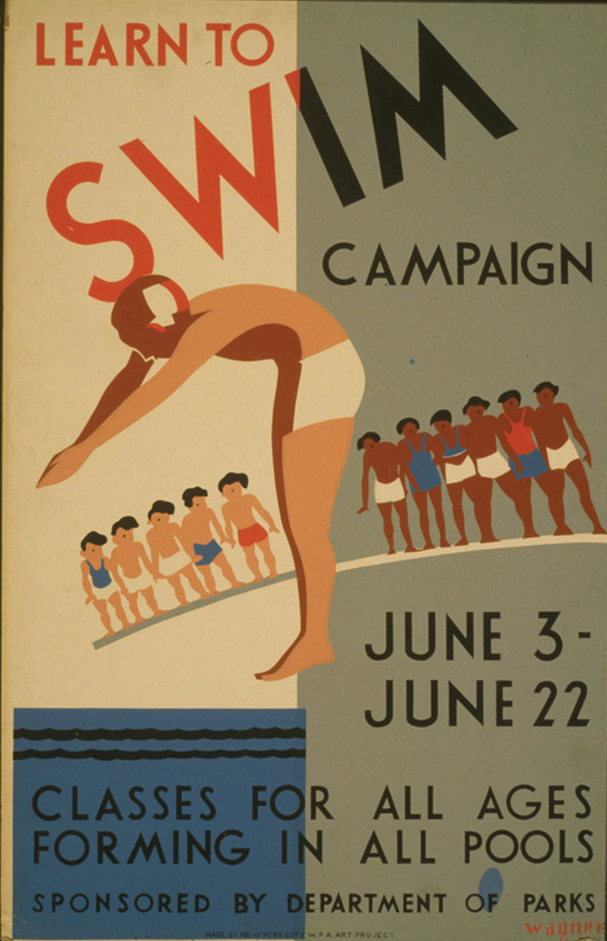

Kelly Miller, an African American sociologist at Howard University labeled the black worker during the Depression as “the surplus man.” African Americans were the first to be fired from jobs when the economy slowed, Miller argued, and they were the last to be hired once the economy recovered. Miller’s description was accurate not only for black Americans but also for women, Native Americans, Asian Americans, and Hispanics. For the first time, each of these groups had a voice in the White House. However, that voice was not the president. While Franklin Roosevelt focused his efforts on securing the electoral support of white Southerners and the cooperation of conservative Southern Democrats in Congress, Eleanor Roosevelt spoke for the “surplus” men and women.
Eleanor Roosevelt demonstrated her commitment to unpopular causes at the 1938 Southern Conference for Human Welfare in Birmingham, Alabama. The conference was an interracial coalition of Southern progressives founded the previous year. The group was dedicated to finding ways to provide greater economic opportunities for Southerners. Although they were not necessarily civil rights activists, for the first two days of the conference, members refused to abide by Birmingham law, which forbade interracial seating. When notified of the violation, police chief Bull Connor arrived and notified the participants that they would be arrested if they did not separate themselves into “white” and “colored” sections.
No woman has ever so comforted the distressed or so distressed the comfortable.
—Connecticut Congresswoman Clare Boothe Luce describing Eleanor Roosevelt.
Bull Connor would become notorious during the 1960s for his use of police dogs and other violent methods of attacking those who defied the city’s segregation ordinances. When Connor ordered the segregation of the 1938 meeting, the predominantly male audience rushed to comply. At that moment, Eleanor Roosevelt picked up her chair and sat in the aisle between the two sections, defying the segregationist police chief to arrest the First Lady of the United States. For this and dozens of other small acts of wit and courage, Eleanor Roosevelt was daily maligned by journalists who assaulted her character and integrity in gendered terms. Later interpretations of history would offer a different perspective on her character and integrity. While Eleanor Roosevelt adopted many of the conservative ideas about race and gender that typified those of her racial and economic background, she also challenged ideas about race, social class, and gender in ways that made her one of the most courageous and important Americans of her time.
The New Deal reinforced existing gendered assumption about the family and paid labor. The Economy Act of 1933 established procedures requiring government agencies that were reducing their workforce to first establish which of their employees had spouses who already worked for the government and fire these employees first. Although the law made no mention of gender, it was understood that married women were the ones that were to be let go. A 1936 survey revealed that most Americans believed such measures to be fair given the scarcity of jobs for male breadwinners. When asked if married women whose husbands were employed full-time should work for wages, 82 percent said no.
Figure 7.10

This WPA poster advertised the availability of maids who had completed training programs and were ready for domestic labor. Women were not encouraged to enter manufacturing fields as they would be during World War II due to the belief that doing so would take away a job from a male head of household.
The public also tended to approve of the practice of paying men higher wages for the same jobs. For example, male teachers were usually paid at least 40 percent more than women; in addition, principals and administrators were nearly always male. In fact, many times when a woman acted as the lead administrator in a school with all-female faculty, she was not listed as the principal, despite the clear expectation that she would perform these duties. In addition, married female teachers were often expected to quit their jobs—a traditional view that had eroded in recent decades but was revived as policy in some school districts during the Depression.
Single women without children might find work in schools but were often ineligible for other government jobs during the Depression. These gendered policies diverged significantly from programs such as the CCC, which employed millions of young men, and the jobs of the National Youth Administration, which were almost exclusively male. Women’s leaders such as Eleanor Roosevelt protested the inherent gender bias in these programs and were able to secure some work camps for nearly 10,000 young women.
Gendered notions of family and work made it especially difficult for women seeking jobs through the PWA, TVA, and the rest of the “alphabet soup” of federal programs. Only the WPA directed any specific action toward providing jobs for women, although these were usually in low-paying clerical and service positions. Even at its peak in 1938, only 13 percent of WPA workers were women. In addition, federal and state government policies encouraged private-sector employers to hire male heads of households first.
Those fortunate enough to find a job in the private sector found that the labor codes established by the NRA endorsed gender-specific pay scales that restricted women to certain kinds of jobs and still paid them less than men in many of those positions. The WPA itself did not permit explicit pay differentials, so men and women who worked the same jobs in WPA programs received the same pay. However, most women who worked for the WPA were relegated to low-paying clerical or “domestic” fields, such as preparing meals or sewing uniforms for male workers.
The Depression saw little advancement for the women’s movement. The pay differential between men and women working the same job remained at 60 percent, while the average salary for women was half that of men. The percentage of women in the paid workforce, which had steadily been rising, stalled at one in four workers. However, the number of careers open to women and the pay they received would expand in future decades, thanks to the number of women who joined the labor movement during the 1930s. The number of union women grew 300 percent during the decade as 800,000 women joined organizations such as the International Ladies Garment Workers’ Union.
Feminists also continued to advocate for legal equality for married women. Prior to the 1920s, American women surrendered their citizenship if they married a man who was not a US citizen. The same was not true for US men, who could become dual citizens if they went abroad, while marriage led to automatic citizenship for their wives and dependents who chose to come to the United States. In the 1920s, the Cable Act provided a way for married women to retain their American citizenship as long as their partners were at least eligible to become citizens—a provision that was partially directed at discouraging American women from marrying Asian immigrants. In 1931, women secured an amendment to the Cable Act that permitted women to retain their citizenship regardless of their husband’s status. Although the provision affected very few women, it was a symbolic victory and helped to further efforts of feminists who sought to protect the legal identity of married women.
A much more overt symbol of women’s advancement during the 1930s was the proliferation of women in leadership roles in government, women such as Frances Perkins and Mary McLeod Bethune. Perkins was raised in relative comfort and excelled in college with degrees in both the physical and social sciences. She chose to keep her name in marriage and was one of the first women to identify herself as a feminist during a meeting of women’s leaders in 1914.
Although Perkins also identified herself as a supporter of revolutionary change for women, she also believed that fundamental differences between men and women needed to be considered in the labor market. She favored laws specifically designed to protect women by limiting the maximum hours they might legally work, a perspective that put her at odds from many other feminists who supported the Equal Rights Act. Perkins is best known as the first woman to serve in the cabinet, and it is in that capacity that her legacy as a women’s rights activist remains. Perkins was the second longest-serving and perhaps the most influential member of Roosevelt’s cabinet, gaining the trust and support of labor and business leaders in the nearly exclusive male world of 1930s industry.
Figure 7.11

Mary McLeod Bethune emerged from poverty in South Carolina to become one of the most influential women in US history. She advised President Roosevelt on matters regarding race, led the National Council of Negro Women, and founded a college in Florida.
Roosevelt relied so heavily on the advice and support of Mary McLeod BethuneA leading educator and founder of Bethune-Cookman College, Bethune advised Roosevelt on matters of importance to African Americans and coordinated meetings of national black leaders known as the “Black Cabinet.” that he considered her the leading member of his “Black Cabinet,” an unofficial group of black leaders who advised the president on matters of race. The fifteenth of seventeen children of rice and cotton farmers in South Carolina, Bethune rose to become one of the premiere educators of the 1930s. The only school that was available to Bethune and her siblings in her youth was operated by a church several miles from her home. With the support of her family and neighbors, Bethune was able to attend this school. She quickly developed a love of books and an appreciation of education as the key to empowerment for her people.
In 1904, Bethune turned her home in Daytona, Florida, into a school for young black women. This school expanded into a teacher’s college and is today known as Bethune-Cookman College. Bethune also used her home as a headquarters for courses to prepare adults to pass the various exams that were required of African Americans who sought to register to vote. Despite physical threats by dozens of Klansmen, Bethune helped to register hundreds of black voters for the first time in South Florida. In 1935, Bethune founded the National Council of Negro Women and also served as President Roosevelt’s advisor on race relations. The following year, Roosevelt appointed her as Director of the Division of Negro Affairs of the National Youth Administration, making Bethune the first African American to head a federal agency.
During the 1930s, Bethune emerged as the most revered black educator since the death of Booker T. Washington. Like Washington, Bethune transformed a one-room school into a college. However, Bethune was far more assertive about her belief in black equality and even directly challenged Klansmen. Bethune also had experience leading schools from the Southern cotton fields to the Chicago slums. As her prestige increased, she traveled the nation as Washington once did, but did so in her own unique style. Not only was she known for her flair for fashion and her strong sense of racial pride, Bethune also refused to accommodate racial slights; her manner disarmed those who might be offended by a powerful black woman. When a white Southerner who was also a guest visiting the White House referred to her as Auntie—a carryover from the paternalism of slavery—Bethune smiled and inquired which of her many brothers and sisters were his father or mother.
Figure 7.12
One of the WPA projects involved the documentation of folk music throughout the nation. This African American musician was photographed as part of this work, although few black musicians and artists were hired by the WPA directly.
The majority of black voters shifted their loyalty from the Republicans to the Democrats during the 1930s. The shift was both a reaction against the Republican Party and a result of Roosevelt’s tentative support for civil rights, which would become evident only during the crisis of war. In addition, various New Deal agencies offered limited job opportunities for African Americans. Roosevelt himself can best be described as both compassionate and paternalistic about the plight of black America. He met with but refused to be photographed next to black leaders until his second term in office due to concerns that even one photo with a black leader might alienate white voters. Roosevelt’s New Deal programs were usually progressive in terms of race in the North and West, but deferred to the views of white Southerners by permitting racial segregation while limiting the number and types of jobs available for Southern blacks. Eleanor Roosevelt would become an outspoken advocate for equal rights and a federal law against lynching. Although Roosevelt also supported these measures, he refused to back either even following his many landslide victories.
The panic of the Depression lifted the façade of racial fair-mindedness from the New South, as white workers cheered and pledged to boycott any business that employed black men beyond wages equal to whites. Some whites met with political leaders both within and beyond the South to try to create provisions requiring companies to only lay off white workers after first firing nonwhites. In Atlanta, a group of whites organized the “Black Shirts” in 1930 and marched with banners reading “No Jobs for Niggers until Every White Man Has a Job!” As a result, the Depression reversed decades of black economic progress and left 50 percent of black men unemployed at its peak.
In the wake of such catastrophe and economic hardship, the NAACP declined from 90,000 paid members following World War I to fewer than 20,000. Black leaders argued about whether to accept racial separatism; segregation, even if it is accommodationist, might be used as a tactical maneuver to win greater opportunities in the near-term for black workers. As a result, organizations like the NAACP were hardly able to mount a nationwide defense of civil rights and instead fought a rearguard action to protect black workers who were the first to be laid off when companies started downsizing due to the Depression.
The result of these campaigns and previous traditions of discrimination meant that even those few nonwhites who found work within New Deal agencies would receive only the lowliest jobs. Although many of the framers of the New Deal were progressive in terms of race, ethnicity, and gender, these agencies relied on the support of white political leaders. The New Deal’s primary goal was relief rather than reform, and each agency operated within a system that tolerated racial and gender discrimination.
Figure 7.13
This New York City WPA Poster offering classes to teach children how to swim depicts white and black children separately. The poster demonstrates the existence of informal segregation that was pervasive in the North.
Agencies such as the WPA determined pay by paying slightly less than prevailing wages as a means of preventing competition with private employers. The WPA also contained a provision that forbade the employment of anyone who had rejected an offer of private employment. Because the “prevailing wage” for Hispanic and African American women was often less than a fourth of what white men might be paid for manual labor, programs such as the WPA often denied employment to women and nonwhites who were seeking jobs beyond those that the discriminatory local market offered. That many New Deal agencies still offered better opportunities for employment should be viewed both as an indication of the progressive intent of many supervisors as well as a gauge of the opportunities for women and minorities within the private sector.
Many of the most progressive events of the 1930s demonstrated the limits of egalitarianism during the Great Depression. For example, the American Federation of Labor (AFL) finally accepted A. Philip Randolph’s union of black railroad porters in 1935. At the same time, the AFL refused to support measures that would have required the integration of workers within its various unions. With the exception of Randolph, the nation’s most prominent labor leaders also continued to at least unofficially support “white first” hiring policies. New Deal programs also discriminated against black families in subtle but significant ways.
For example, one of the main purposes of the newly created Federal Housing Administration was to provide federally guaranteed home loans for families who might not otherwise be eligible for home ownership. FHA loan applications did not inquire about an applicant’s race or ethnicity, which made it appear as though loan decisions were based only on other factors. However, the FHA’s underwriting manual indicated the belief that property values deteriorated when black families moved into neighborhoods. As a result, the FHA evaluated a loan based on the location of a house. Administrators consulted neighborhood maps that contained red lines around black neighborhoods and rated other ethnic clusters as credit risks. Because minorities could seldom obtain a house outside of a segregated neighborhood, even if they could pay cash, the FHA practice of “redliningIn this context, redlining is the process of designating entire neighborhoods as unacceptable credit risks based on their racial demographics. The term itself comes from the FHA maps, which designated minority neighborhoods with a red line. The FHA was created to assist homebuyers in need of credit and did not overtly make any distinction of race. However, the FHA refused to back loans in minority neighborhoods in an era of residential segregation, effectively denying credit to minority applicants.” minority neighborhoods effectively meant that the FHA would only support white families buying homes in white neighborhoods.
Despite the crushing discrimination in housing and employment, nothing demonstrated the persistence of racial inequality as starkly as the judicial system of the Deep South. Communist labor leader Angelo Herndon was arrested after leading a peaceful and biracial protest march in Atlanta. Although the participants had simply sought to draw attention to the plight of the unemployed, Herndon was arrested under an obscure statute permitting the death penalty for those leading an insurrection against the government. An African American graduate of Harvard law school defended Herndon and reduced his sentence to twenty years of hard labor on a Georgia chain gang. Many other black Communists found themselves in similar situations as federal and state authorities increased their attack against leftists once the Communist Party added racial equality as part of its agenda.
In neighboring Scottsboro, Alabama, nine adolescent black youths were arrested and charged with raping two white women on a freight train. The young men had jumped aboard a train in search of any work they could find when they found themselves in an altercation with a group of white boys in a similar situation. The white boys were outnumbered and thrown from the train, after which the white youths decided to “get even” by fabricating the charges of rape.
After eight of the young men were sentenced to death, some of the whites came forward and revealed the truth. However, two all-white Southern juries still recommended the death sentence in a series of mistrials and appeals that demonstrated the potential injustice of a white-only jury. A third trial included one black juror—the first to sit on a grand jury in Alabama since Reconstruction. However, under the laws at that time, an indictment could still be made with a two-thirds majority. The white-majority jury voted in favor of a guilty verdict and the death sentence.
Each of these lawsuits was funded by the NAACP, but the bulk of financial and legal support came from the Far Left. Communist organizations had taken the lead in financing civil rights cases and attempts to register black voters during the 1930s, and they likewise took the lead in defending the Scottsboro BoysNine African American boys aged twelve to nineteen who were accused of raping two white women on a freight train in Alabama in 1931. All but the youngest member of the group were sentenced to death in an infamously corrupt set of trials. The NAACP and the Communist Party provided legal defense, and one alleged victim and a witness both admitted that they had lied, yet the all-white juries kept returning guilty verdicts. Most of the young men spent years in prison until they were finally released.. Although the US Supreme Court twice ruled that these nine young men had been denied fair trials, it would take over a decade to secure the release of many of the defendants.
The Depression unleashed the hostility against Asian immigrants that was endemic in the 1924 National Origins Act and various state laws that limited the economic opportunities of Asian migrants in California, Oregon, and Washington. Much of this anger was directed at Filipino immigrants who were still legally permitted to enter the United States as citizens of an American colony. In October 1929, a mob of several hundred whites attacked a camp of Filipino laborers near Exeter, California. Angered by the decision of growers to employ Filipinos, the mob clubbed the workers and burned the makeshift homes where their families lived. An even larger anti-Asian race riot attacked a dance hall rented by Filipino workers near Santa Cruz in 1930, leading to hundreds of injuries. These attacks only escalated the violence against Asian workers, including several instances where sleeping quarters and community centers were dynamited. In addition, California amended its laws against interracial marriage to include a prohibition against “whites” marrying Filipinos in 1933.
Even those who were alarmed by the recent discrimination and violence tended to support the efforts of Western state legislatures who attempted to pass special laws barring Filipino migration. The federal government refused to approve these resolutions as long as the Philippines remained US territory. However, in 1934, Congress approved the Tydings-McDuffie ActIn response to Filipino activists, this 1934 law granted independence to the Philippines in 1944. Some believe that the law was inspired more by a desire to keep Filipinos from entering the United States, as the law also classified them as noncitizen aliens. Before the law, Filipinos were citizens of a US territory and legally permitted to live and work in the United States., which granted Filipino independence by 1944. Although the Philippines would still be a US territory until 1946, all Filipinos were immediately classified as noncitizen aliens and were unable to legally live or work in the United States. Although the law stopped short of requiring the immediate deportation of Filipinos already in the United States, Congress approved a measure in 1935 that encouraged voluntary repatriation. Many white Californians were even less subtle in expressing their encouragement that Filipinos return to their native lands. Anti-Filipino prejudice remained high until the United States required the assistance of the Philippines and Filipino-Americans in World War II.
The issue of barring Mexican immigration presented no such legal and diplomatic challenges, even though the Monroe Doctrine was often used to justify colonial practices toward Mexico and Latin America. State governments and federal officials conducted raids that led to the forced deportation of an estimated half a million Mexican Americans. Many of these individuals were placed in sealed boxcars and returned to Mexico in such an emaciated condition that the Mexican government was compelled to send millions of dollars in humanitarian aid to their northern border. Due to the nature of the mass arrests and deportation, many of those who were forcibly sent to Mexico were legal citizens born in the United States who simply lacked documentation at the time of their arrest. A high percentage of those deported were children who had most likely also been born in the United States.
Hostility against Mexican American laborers was not restricted to the Southwest. The 1930 US census was the first and only census that recorded Americans of Mexican descent as a separate race. Eugenicists attempted to use the façade of science to convince others of innate racial inferiority and backed a number of failed efforts to pass laws that would prevent anyone of Mexican descent from entering the United States. Given the high unemployment of white workers in the Midwest, the governor of Kansas wrote personal appeals to the six largest railroads in his state asking that they dismiss all Mexican laborers and hire whites in their place. Similar requests were made of railroads in neighboring Colorado, while farmers in Nebraska who continued to hire Mexican Americans were ostracized by their white neighbors.
Figure 7.14

The League of United Latin American Citizens (LULAC) was founded in 1929. This photo shows the first LULAC meeting in Corpus Christi, which brought various fraternal and civil rights organizations from around the Rio Grande Valley.
The 1930s also saw increased efforts by Mexican Americans to defend their civil rights. For example, college students of multiple races in Southern California joined a protest led by Mexican American students against Chaffey College. The administration had restricted Mexican Americans from using the college’s pool but soon agreed to end its policy of segregation. The activism of the students soon spread to the city of San Bernardino, who likewise ended its policies of segregation.
Protests against segregated schools also gained momentum in the 1930s. Ninety percent of Mexican American students in South Texas attended segregated schools during the Great Depression. The 1876 Constitution of Texas explicitly permitted separate schools for white and black children but was silent regarding other minorities. Despite the lack of specific legal guidance, white school officials had created a system where most Mexican American children were educated in separate schools taught by predominantly white teachers who spoke little or no Spanish. Mexican Americans in Del Rio challenged the separate and unequal facilities of their community in 1930.
The Del Rio movement was only possible because of a fundraising campaign that raised thousands of dollars from members of the League of United Latin American Citizens (LULAC)Created by the merger of several civil rights organizations, LULAC was formed in 1929 and remains the oldest and largest advocacy group for the rights of Hispanics in the United States.. LULAC chapters from McAllen and Harlingen north to San Angelo joined chapters of larger cities such as San Antonio in supporting the lawsuit. Although the Texas Supreme Court refused to hear Del Rio Independent School District v. Salvatierra, the lawsuit spurred the development of active LULAC chapters throughout Texas. The refusal of the Texas Supreme Court to hear the case may have been a tacit recognition that LULAC would win its appeal. Diplomatic agreements with Mexico and the US Census Bureau both required that people of Mexican descent be classified as citizens without any distinction of race.
The lawsuit and the refusal of state officials to address their concerns spurred a statewide movement challenging segregation. LULAC also worked with other organizations to form La Liga Pro-Defensa Escolar (the School Improvement League), which publicized the inferior conditions and unequal funding of separate schools. These campaigns were rewarded in 1948 when a federal court declared that the segregation of Mexican American children violated the Fourteenth Amendment. However, the court refused to consider whether the same conclusion would apply equally to African Americans who remained segregated under Texas law.
The Great Depression transformed the poverty of many Native Americans into an unbearable condition. As a result, many within the federal government supported the notion of increasing the funds that were available to the Bureau of Indian Affairs. Secretary of the Interior Harold Ickes had been active in the American Indian Defense Association, a group formed by John Collier in the 1920s that sought to protect the property and preserve the culture of several Native tribes. Ickes appointed Collier as the Commissioner of the Bureau of Indian affairs, a controversial nomination given that Collier’s activism on behalf of the Pueblos of New Mexico seemed radical to some. In addition, some Native leaders saw the non-Indian Collier as an outsider and were angered by methods they considered domineering. As Commissioner, Collier rejected notions of simply increasing aid to the destitute in favor of a plan he hoped would restore tribal sovereignty and eventually lead to self-sufficiency.
Collier demonstrated elements of the high-handedness that angered his critics in drafting the Indian Reorganization Act (IRA)Known informally as “The Indian New Deal,” the law fundamentally changed the way the Bureau of Indian Affairs operated. The law reversed the strategy of the Dawes Act, which was based on converting communal land into private property, restoring both land and self-government to Native American reservations. with little initial consultation of Native leaders. However, Collier also did something no other BIA Commissioner had done in the past by holding a series of meetings with tribal leaders around the nation to explain the provisions of his plan as well as listen to concerns and suggestions.
The essence of the plan was to reverse the spirit and letter of the Dawes Act of 1887, which sought to assimilate Native Americans by dividing their land. The IRA restored tribal ownership and provided $10 million of government loans to help tribes establish businesses in agriculture and manufacturing. The law also provided funds to help tribes purchase some of the lands they lost in the past and provided for greater self-government. Collier’s plan was criticized by many Native Americans because many of the decisions of the newly empowered tribal governments would be subject to the approval of the BIA and the Secretary of the Interior. In one of the most important provisions, the IRA directed funds from boarding schools to local public schools that would be controlled by the tribes. The IRA also provided funds to facilitate the study of Native American history, language, art, culture, and other subjects.
The IRA sustained tribal opposition among many Native tribes that had already surrendered most of their land and feared they would have little to gain from the plan. In addition, some Native Americans accepted the goals of assimilation and felt the BIA would “turn back the clock” on the progress that had been made toward this goal. Given the long history of BIA programs that failed to live up to their promises, many understandably feared that the IRA was yet another trick to reduce Native lands under the guise of reform.
Largely due to Collier’s history of activism and his efforts to solicit feedback, approximately two-thirds of Native tribes approved the measure. Convincing Congress proved equally difficult as the IRA was denigrated by many ethnocentric non-Indians as encouraging a return to “primitive tribalism.” Others saw the IRA as a reversal of the federal government’s long policy of assimilation many still defended as the most humane policy. However, Congress ultimately approved a watered-down version of Collier’s original IRA bill.
Many of the funds that were supposed to be directed toward businesses and schools were never received. Even with these severe shortcomings, the IRA helped reverse five decades of assimilationist policies and restored Native pride and culture on many reservations. In addition, most of the $10 million that was loaned to tribal governments was repaid. Tribal income from various agricultural enterprises alone increased from $2 million to $50 million, partially as a result of these IRA loans.
Collier is still vilified by some Native Americans and scholars for the often high-handed methods he used to secure Native support of his plans. In addition, the BIA’s style of elective government conflicted with the traditional methods of self-government of many tribes. Rather than winner-take-all elections, these tribes were governed by councils who sought to establish a consensus based on the input of each member. These are important criticisms that limited the effectiveness of the IRA. At the same time, Collier is also revered for his intent to restore Native sovereignty in ways that reversed hundreds of years of federal policy based on extinction and assimilation. Collier also secured the creation of the Indian Emergency Conservation Program (IECP), which employed 80,000 Native Americans within a branch of the Civilian Conservation Corps. In addition, Collier also put an end to the practice of forcing Christianity upon Native children at boarding schools against their parent’s wishes.